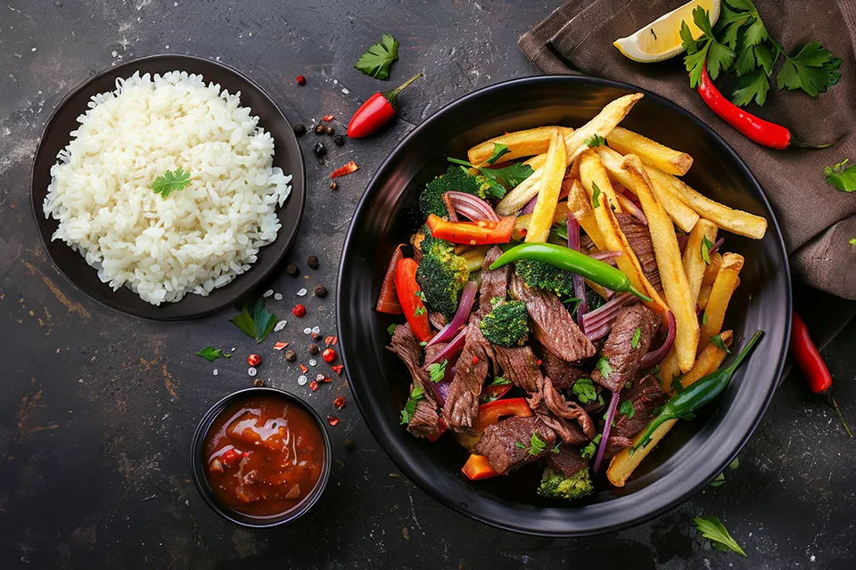
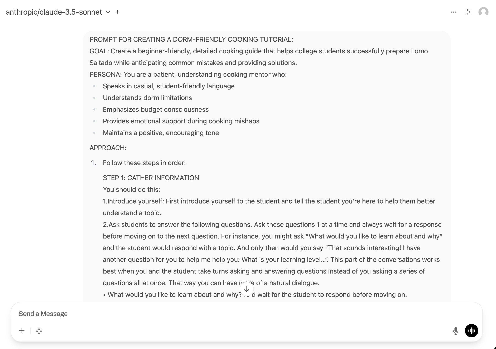

Learning to Cook with AI: An Experiment
I’m Peruvian but never learned to cook Lomo Saltado properly. Living in a college dorm with limited equipment, I decided to use Claude as a tutor to learn. But instead of just asking for help, I ran an experiment: two separate tutoring sessions using different prompting approaches to see if prompt engineering actually makes a difference for learning.

A finished plate of Lomo Saltado - the goal of the tutoring sessions
The Experiment Setup
Session 1: Vanilla Claude
I started a fresh conversation with no special prompting. Just asked:
“I want to learn how to cook Lomo Saltado in my college dorm. Can you teach me?”
Claude immediately provided a comprehensive ingredient list, equipment needs, and step-by-step instructions. Efficient and informative.
Session 2: Structured Tutoring Prompt
For the second session, I used the Mollick structured tutoring prompt, which instructs the AI to: - Introduce itself by name - Ask questions one at a time before teaching - Gather information about the student’s prior knowledge - Use leading questions rather than just providing answers - Provide emotional support and encouragement
The prompt started with:
“You are an upbeat, encouraging tutor who helps students understand concepts by explaining ideas and asking students questions. Start by introducing yourself to the student as their AI-Tutor who is happy to help them with any questions…”
Same question about learning Lomo Saltado, but this time Claude introduced itself as “Alex” and asked about my cooking experience before giving any instructions.
How The Sessions Differed
Session 1: Information First
Claude immediately delivered: - Complete ingredient list with substitutions - All equipment needed - Step-by-step cooking instructions - Do’s and don’ts - Storage and freezing tips
It was like reading a very thorough cookbook. Efficient, but I started feeling overwhelmed around the “do’s and don’ts” section because it kept adding more information without checking if I was following along.
When I asked for a “cookbook style summary” later, it became clear I’d experienced information overload.
Session 2: Questions First
Claude asked: - What’s my cooking experience level? - What equipment do I have access to? - What do I already know about Lomo Saltado?
When I mentioned I’m Peruvian and grew up eating this dish, the whole approach changed. Claude acknowledged my cultural connection, didn’t waste time explaining what Lomo Saltado is, and focused on translating my taste memory into cooking technique.
The information came in smaller chunks, each followed by a question to check understanding. It felt more like a conversation than a lecture.

Comparing the two Claude tutoring session interfaces
When Things Went Wrong
I intentionally messed up the recipe in both sessions to see how each tutor would handle mistakes.
Session 1 Response
When I said I overcooked the meat, added too much soy sauce, and the tomatoes were mushy, Claude gave practical solutions: - Slice overcooked meat thinner - Balance soy sauce with vinegar and sugar - Remove mushy tomatoes and add fresh ones
Organized by problem, very solution-focused. It worked, but felt clinical.
At one point I got frustrated and said “I do NOT want to try again tomorrow. I want to DO IT NOW.” The tutor went into emergency rescue mode, which helped but didn’t address the emotional crisis.
Session 2 Response
When I introduced the same problems, Claude started with:
“Don’t panic! This is totally normal when learning, and yes, we can salvage this!”
Then provided the same practical solutions, but added:
“Remember: Even ‘mistakes’ can taste good, and every Peruvian abuela had to start somewhere!”
This was culturally resonant and emotionally supportive. The solutions were similar, but the tone acknowledged that learning involves struggle, not just technical problem-solving.
I didn’t have the same emotional breakdown in Session 2. The earlier relationship-building (validation, personalization) seemed to prevent it.
The Final Cookbook Recipes
Both sessions ended with me asking for a clean cookbook-style recipe.
Session 1 Recipe
- Heavy use of emoji headers (🥩, 🍅, ⏰)
- Multiple subsections: Equipment, Ingredients, Shortcuts, Steps, Money-Saving Tips, Dorm Hacks, Storage
- Comprehensive resource document
- Generic college student advice
Session 2 Recipe
- Cleaner visual hierarchy
- Sections: What You’ll Need → Game Plan → Key Success Tips → Storage
- More scannable layout
- Tailored to: college student + new cook + Peruvian heritage + meal prep constraints
Both recipes are accurate and functional. Session 1 is more comprehensive; Session 2 is more personalized to my specific situation.
What Actually Made a Difference
The Structured Prompt Won
Session 2 was the better tutoring experience because:
Better sequencing: Asking questions before teaching meant the information was calibrated to what I actually needed, not everything the AI knows about Lomo Saltado.
Personalization: Learning I was Peruvian changed how Claude explained things. It connected to my existing knowledge (“You know what it should taste like”) rather than starting from zero.
Emotional support: Normalizing mistakes and providing encouragement made me more likely to persist through problems. This matters for skill-building where failure is inevitable.
Active learning: Session 2 ended each explanation with a question, forcing me to think rather than passively receive information.
Where Session 1 Was Better
Speed: If you just want information fast, the vanilla approach delivers immediately without the question-gathering phase.
Comprehensiveness: The final recipe from Session 1 had more detail on meal prep, freezing, and storage tips.
No preamble: Some people find the “getting to know you” phase of structured tutoring annoying if they just want answers.
Does This Matter Beyond Cooking?
The Pedagogy Research
The structured prompt approach aligns with established learning science. According to research on effective tutoring, good tutoring involves: - Assessing prior knowledge before teaching - Providing scaffolded support - Using questions to promote active learning - Giving emotional encouragement alongside technical help
These aren’t AI-specific insights—they’re how human tutoring works best too.
The Limitations
Even with perfect prompting, AI tutoring has constraints:
Can’t taste your food: Claude couldn’t tell me if my Lomo Saltado actually tasted right. I had to rely on my own judgment.
Can’t see your technique: When I said the meat was overcooked, Claude couldn’t see whether I was cutting it correctly or using too high heat. The advice was generic.
Can’t adapt in real-time: A human tutor watching me cook would catch mistakes as they happen. AI only responds to what I describe.
Generic cultural knowledge: Session 2’s cultural references (“Peruvian abuela”) were sweet but generic. It didn’t know my actual family’s cooking style or regional variations.
When Structured Prompting Matters Most
The prompt engineering made the biggest difference when: - Learning something new (not just looking up facts) - Dealing with frustration or mistakes - Needing personalized guidance - Building skills through practice
For quick information retrieval, vanilla Claude is probably fine. For actual learning, structure helps.
What I Learned
About AI Tutoring
Prompt engineering isn’t just theoretical optimization—it genuinely changed my learning experience. The structured prompt created better dialogue, personalization, and emotional support.
But even good prompting has limits. AI tutoring works best for knowledge-based learning where you can verify results yourself. For physical skills like cooking, you still need to trust your own judgment about the outcome.
About Learning Lomo Saltado
I actually cooked it. Both sessions gave me functional recipes, but Session 2’s emotional support made me more willing to try despite knowing I’d probably mess up.
The AI was right about one thing: even mistakes taste pretty good, and you learn by doing.
About Prompt Design
Good tutoring prompts should include: - Instructions to gather context before teaching - One-question-at-a-time pacing - Emotional scaffolding for when things go wrong - Requirements to keep students actively thinking
These aren’t complex AI techniques—they’re just principles of good teaching, codified for an AI to follow.
If you’re using AI to learn something practical, take five minutes to set up a proper tutoring prompt. The difference is real.